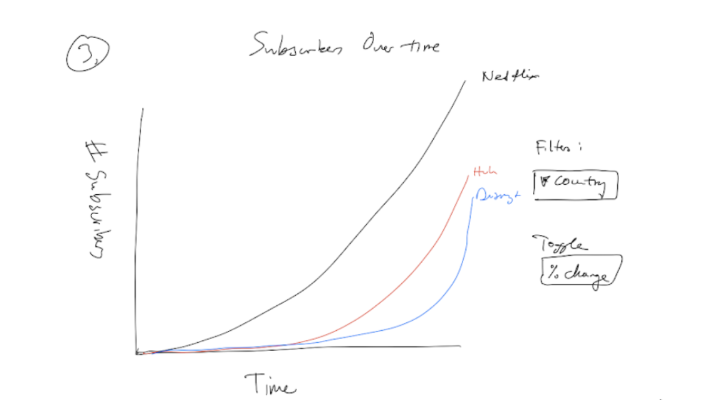
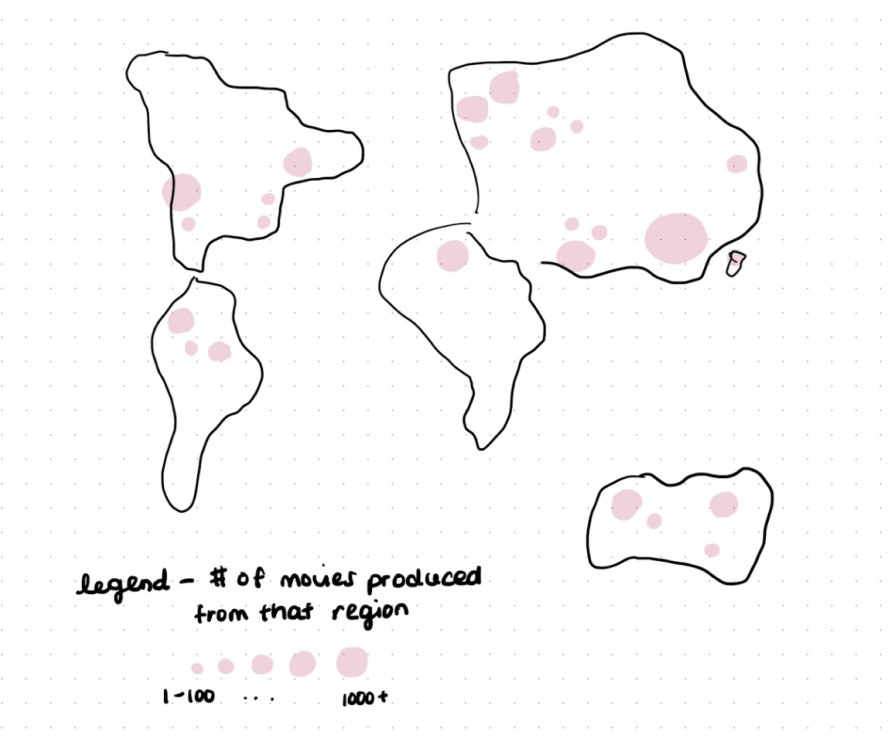
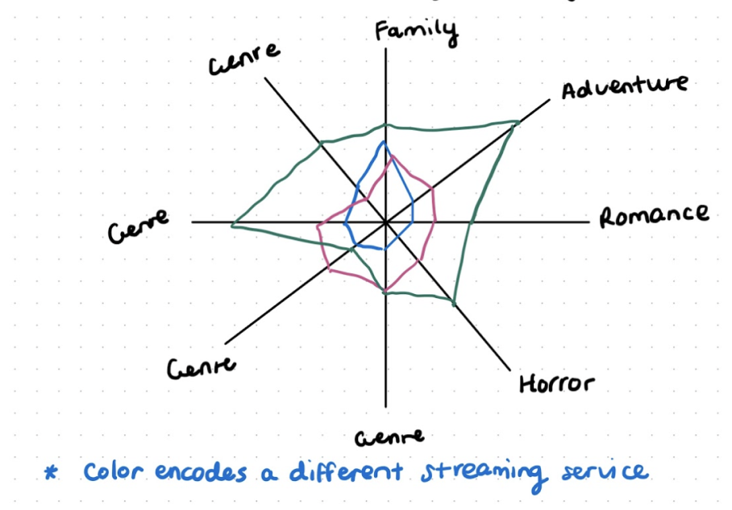
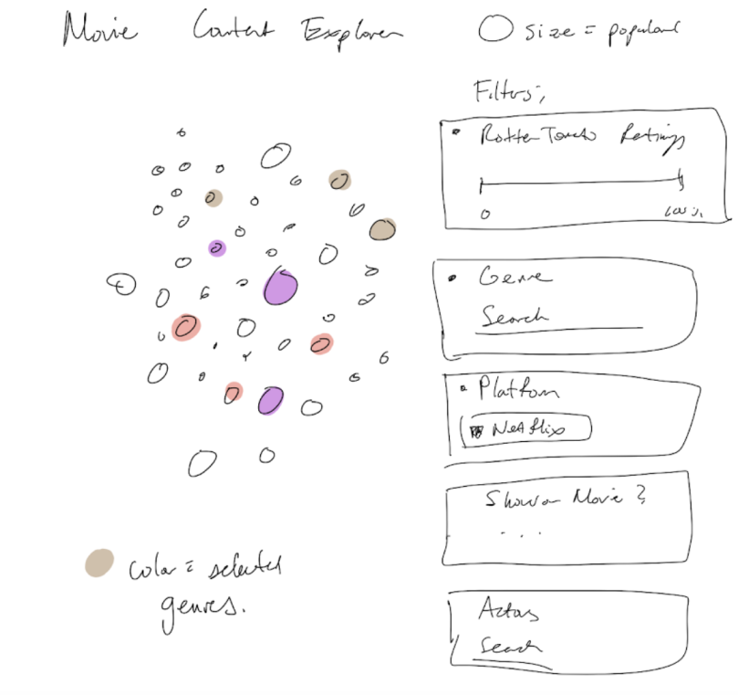
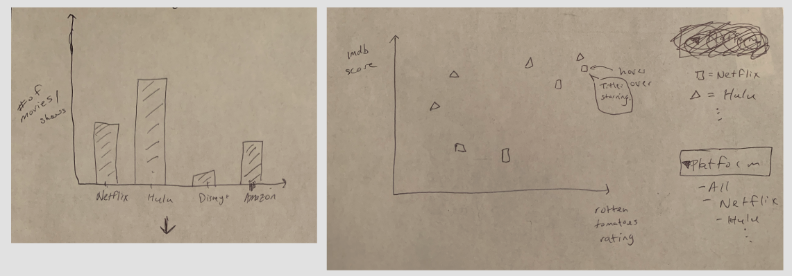

When was the last time you watched TV...on an actual TV?
Televisions and movie theaters seem like things of the past. With the convenience of almost any movie or show at just a few taps or clicks away, streaming has become the mainstream (no pun intended).
The rise of the age of streaming
The number of subscribers and revenue for streaming platforms have skyrocketed over the last decade. Netflix appears to be the leading platform to rise in the streaming space ever since it started transitioning from its old DVD rental service model to a streaming model in 2007.

Overall, how do the streaming platforms compare?
Where is the content produced?
Let’s first take a look at the spread of content on streaming platforms by their country of production. Feel free to select which platform you want to filter the map by specifically in the drop-down!

What is the genre profile of each platform?
Each axis represents a different genre from the top 10 genres across all streaming services. For each streaming service, its distribution of genres is mapped onto this radial plot below. This provides a visual representation of the genre profile and breakdown of content by genre.

No platform is one-size-fits-all.
Let’s find which platform is best for you!
In this exploratory visualization, use the filters provided to select streaming content that you love the most. During this process, you’ll get to see how your favorite content compares to all the content across the platforms.
When you’re done selecting, leave the rest of the work to us. We’ll help you find which platform is the most suitable for your viewing preferences.

These are your viewing preferences.
Take a look at how your viewing preferences map onto the streaming platforms.

We think that XYZ is the best platform for you!
Based on your viewing preferences, we think XYZ platform is most suited for you because it has:
the greatest number of ABC genres, XX% of content with a XX% rotten tomatoes rating, and the most content from CountryName.